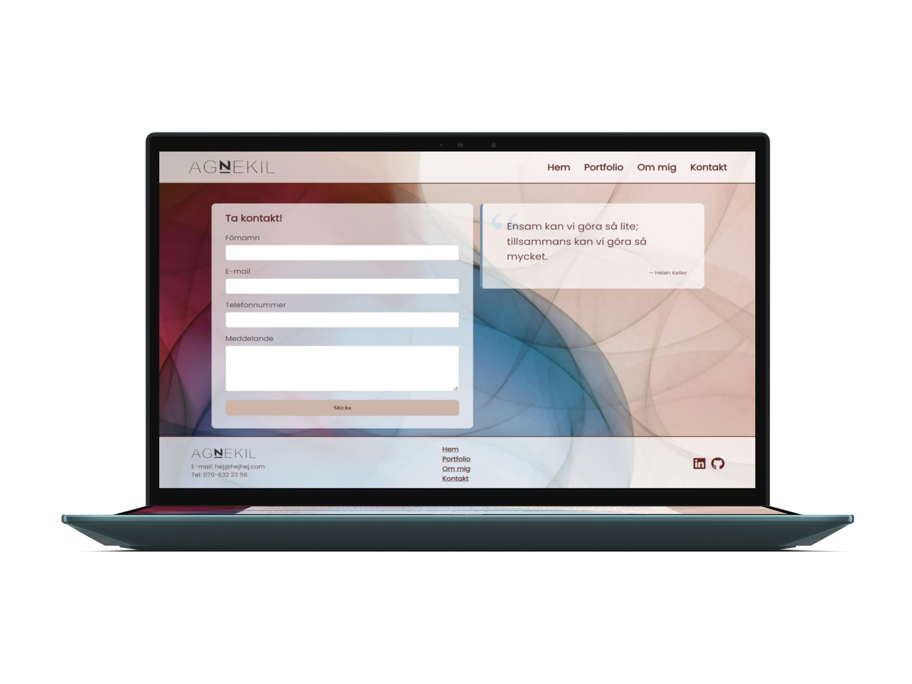
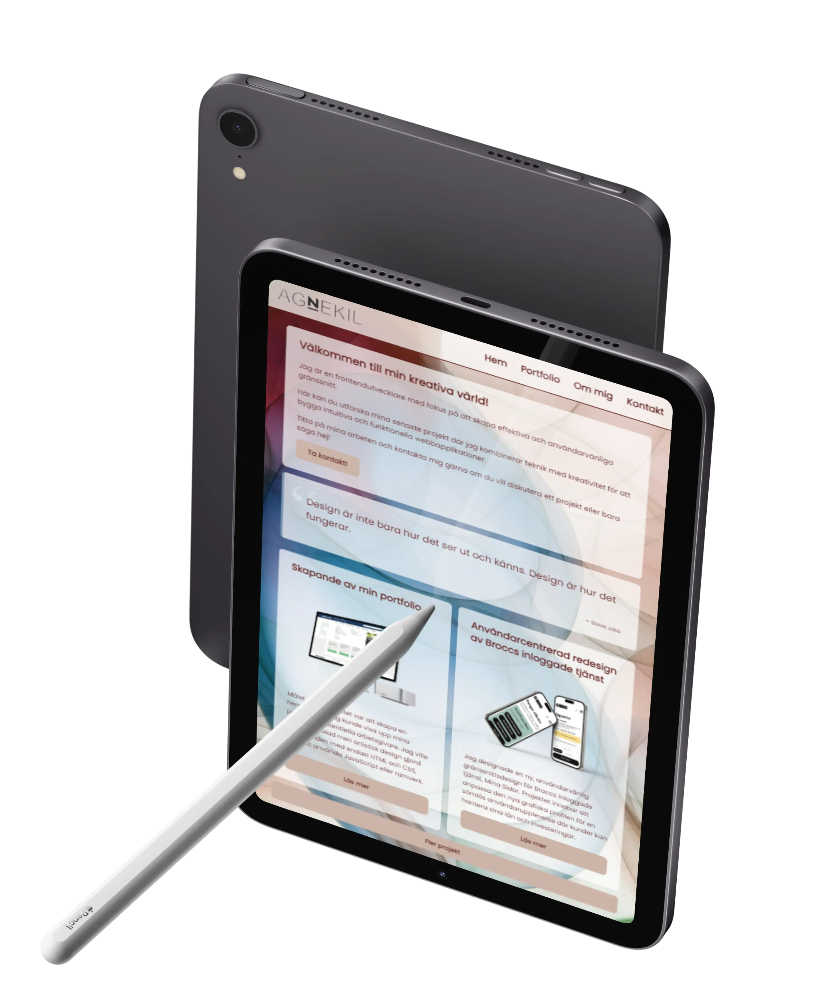
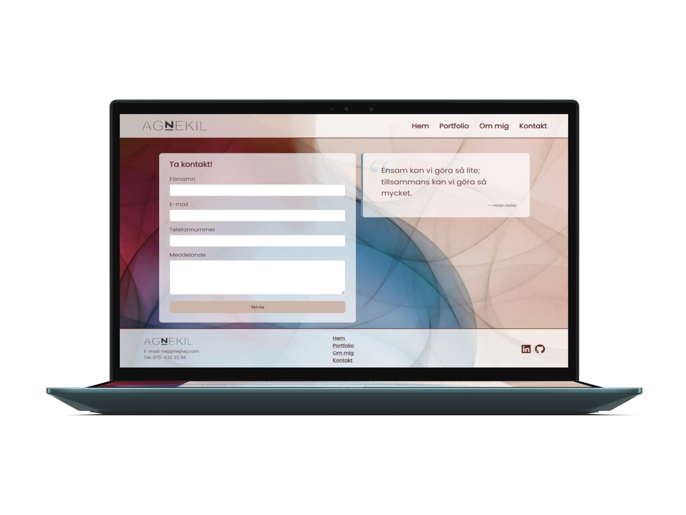
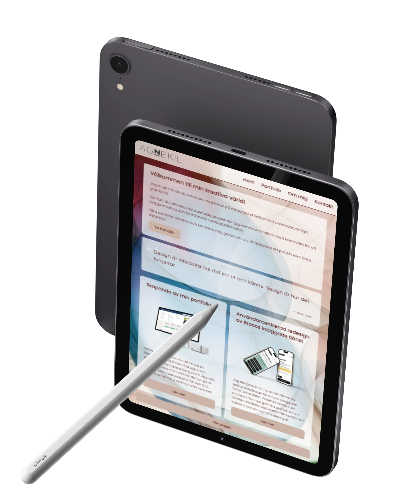

Målet med projektet:
Målet med projektet var att skapa en portfoliohemsida som
effektivt visar upp mina olika projekt inom frontendutveckling och
UI-design. Syftet var att skapa en simpel men tilltalande design
som speglar både min programmeringserfarenhet och min kreativa
sida. Hemsidan skulle vara användarvänlig och responsiv, med fokus
på en mobile-first-design.
Min erfarenhet:
Min uppgift var att skapa en portfoliohemsida som både visar upp
mina färdigheter och erbjuder en positiv användarupplevelse. Jag
arbetade mycket med färgval och layout för att skapa en harmonisk
och användarvänlig design.
Projektet var en del av en kurs på IT-högskolan där vi enbart fick
använda HTML och CSS. Detta innebar att jag var begränsad i min
möjlighet att använda ramverk och JavaScript, vilket gjorde att
jag behövde upprepa mycket kod för de olika modulerna. Trots detta
lyckades jag skapa en hemsida som är både visuellt tilltalande och
funktionell.
Resultat:
Den färdiga portfoliohemsidan är en simpel
och användarvänlig plattform som väl representerar mina
färdigheter inom frontendutveckling och UI-design. Hemsidan är
responsiv och har en mobile-first-design, vilket säkerställer en
positiv användarupplevelse på alla enheter.
Projektet visar
på min förmåga att skapa anpassade designlösningar med begränsad
teknisk utrustning och leverera en högkvalitativ frontend-lösning
som överträffar kursens krav.
Använda tekniker: HTML, CSS, Figma